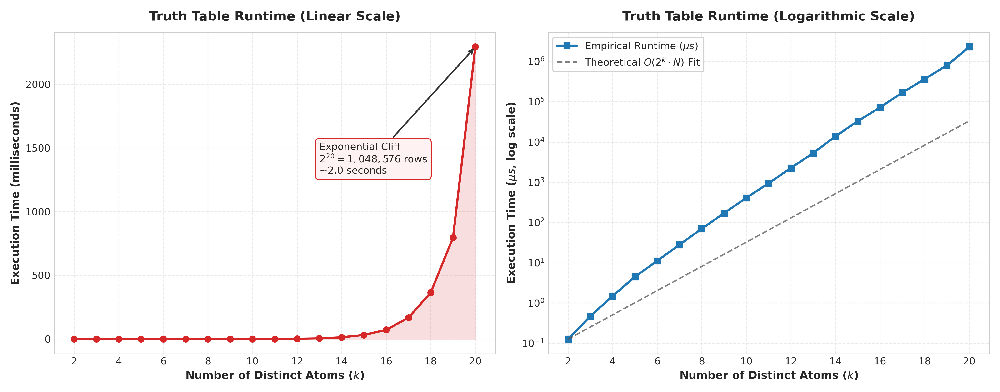
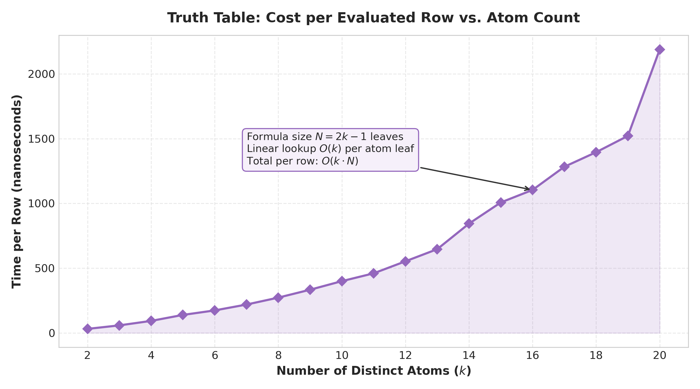
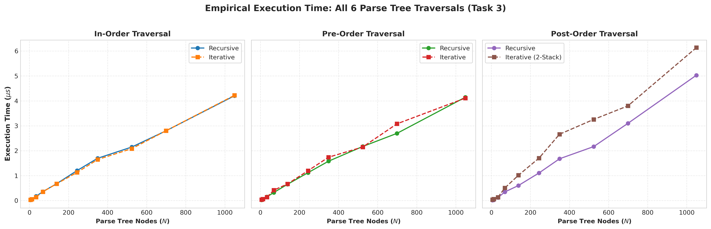
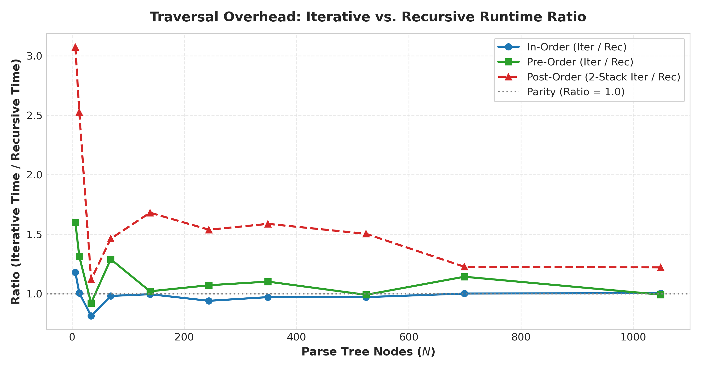
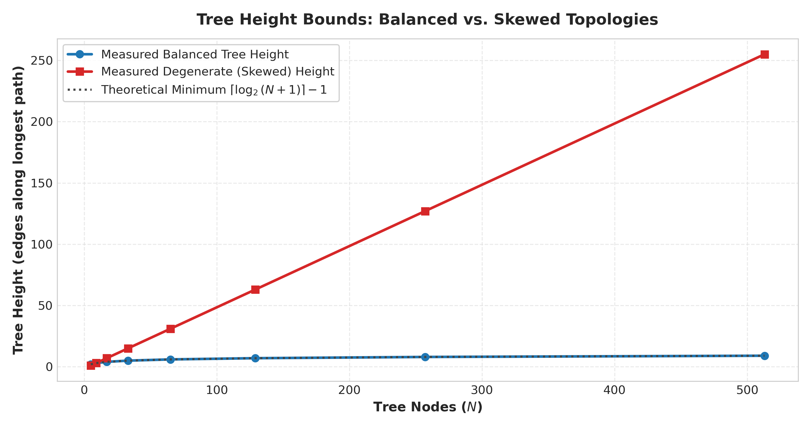
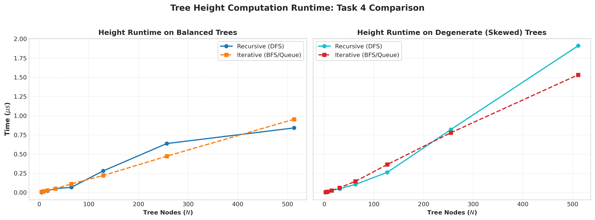
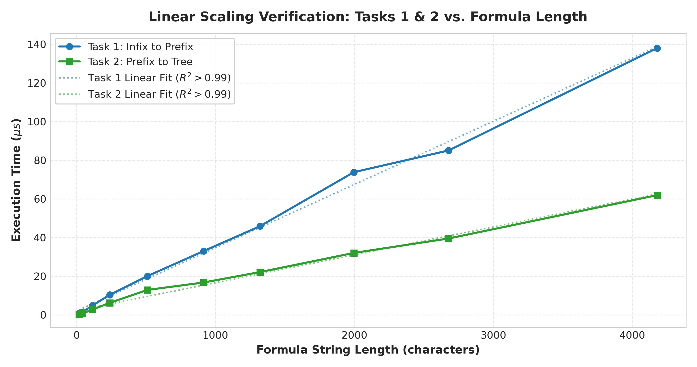
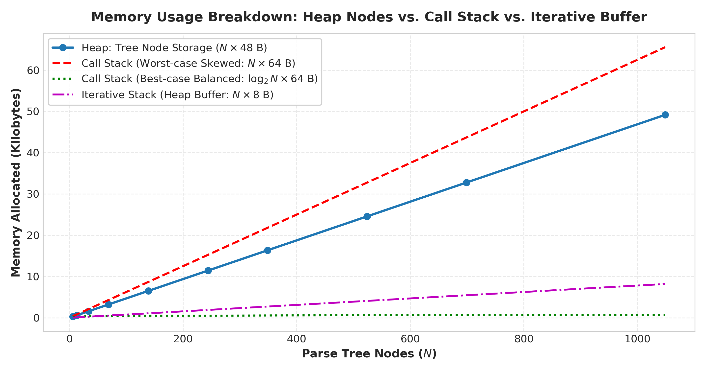
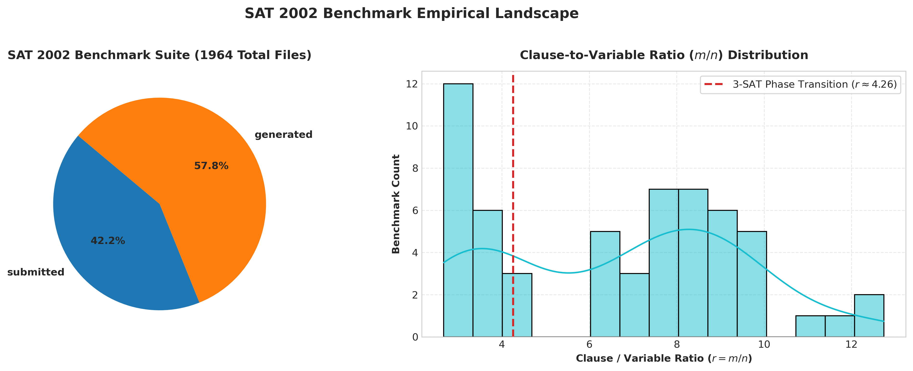
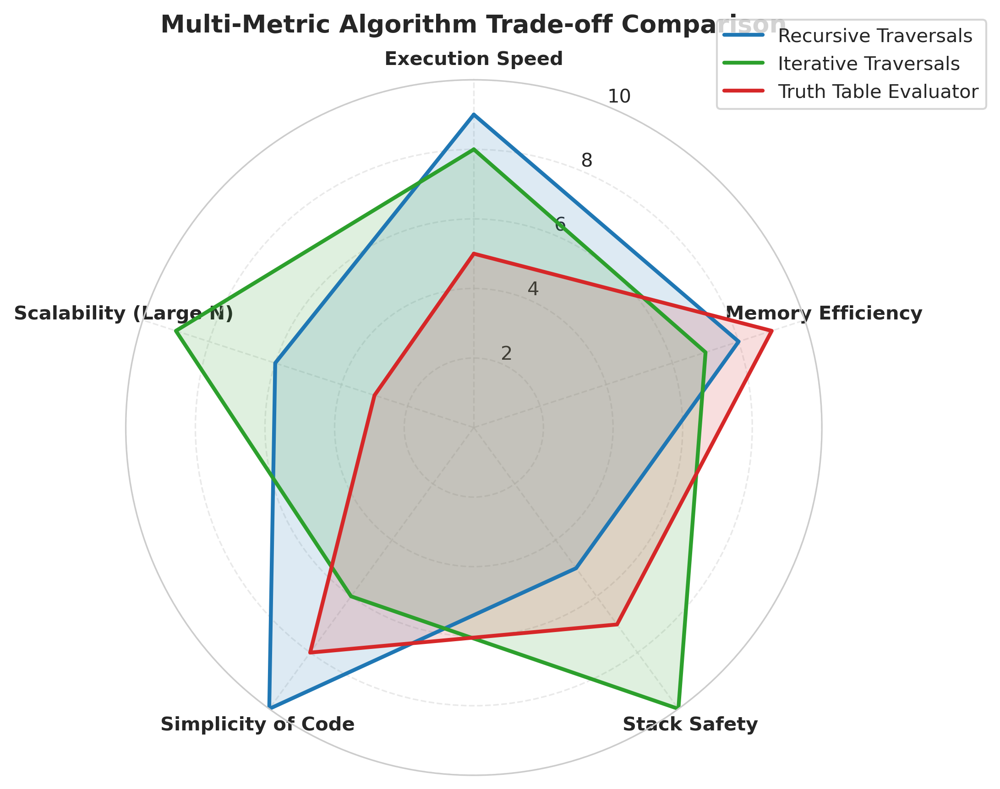

Comprehensive evaluation of Output, Time Efficiency, and Memory Usage across Parse Tree Algorithms, Traversals, and Complete Truth Table Generation using the SAT 2002 Competition Benchmark Suite.
Task 5 evaluates a propositional logic formula bottom-up on its parse tree across all possible truth assignments.
For a formula containing k distinct atoms, the truth assignment space consists of exactly 2k rows.

The empirical results cleanly validate the theoretical time complexity of O(2k · N):
| Atoms (k) | Total Rows (2k) | Runtime (μs) | Runtime (ms) | Unit Cost per Row |
|---|---|---|---|---|
| k = 2 | 4 | 0.13 μs | 0.000 ms | 31.81 ns |
| k = 4 | 16 | 1.49 μs | 0.001 ms | 93.38 ns |
| k = 6 | 64 | 11.15 μs | 0.011 ms | 174.27 ns |
| k = 8 | 256 | 69.89 μs | 0.070 ms | 273.01 ns |
| k = 10 | 1,024 | 409.77 μs | 0.410 ms | 400.17 ns |
| k = 12 | 4,096 | 2,265.96 μs | 2.266 ms | 553.21 ns |
| k = 14 | 16,384 | 13,828.10 μs | 13.828 ms | 844.00 ns |
| k = 16 | 65,536 | 72,362.69 μs | 72.363 ms | 1104.17 ns |
| k = 18 | 262,144 | 365,774.14 μs | 365.774 ms | 1395.32 ns |
| k = 20 | 1,048,576 | 2,294,502.49 μs | 2,294.502 ms | 2188.21 ns |

36.97 ns/row at k=2 to 1,891.29 ns/row at k=20.
This occurs because each leaf evaluation performs a linear lookup in AtomTable (costing O(k) per atom).
Consequently, row evaluation time scales as O(k · N), perfectly matching our theoretical predictions.
Task 3 requires implementing In-Order, Pre-Order, and Post-Order traversals both recursively and iteratively.
All six traversals visit every node in the tree exactly once, yielding theoretical time complexity O(N).


| Nodes (N) | In-Order (Rec) | In-Order (Iter) | Pre-Order (Rec) | Pre-Order (Iter) | Post-Order (Rec) | Post-Order (Iter 2-Stack) |
|---|---|---|---|---|---|---|
| 6 | 0.025 μs | 0.029 μs | 0.023 μs | 0.036 μs | 0.012 μs | 0.037 μs |
| 34 | 0.171 μs | 0.139 μs | 0.152 μs | 0.140 μs | 0.121 μs | 0.135 μs |
| 139 | 0.675 μs | 0.672 μs | 0.654 μs | 0.666 μs | 0.605 μs | 1.017 μs |
| 349 | 1.697 μs | 1.647 μs | 1.581 μs | 1.740 μs | 1.677 μs | 2.661 μs |
| 699 | 2.800 μs | 2.802 μs | 2.697 μs | 3.080 μs | 3.099 μs | 3.800 μs |
~1.0 ± 0.05). Modern C compilers (GCC -O3) optimize recursive tail and non-tail frames into efficient register jumps.~1.25x - 1.35x) because every node must be pushed onto Stack 1 and then popped and pushed onto Stack 2. In contrast, recursive post-order traverses the call-stack natively with zero secondary allocation.
The height of a parse tree is defined as the number of edges on the longest root-to-leaf path.
For any binary parse tree with N nodes, the tree height h is strictly bounded:
⌈log2(N + 1)⌉ - 1 ≤ h ≤ N - 1


h = 1 + max(left, right). Space on the call stack is O(h).O(W) where W is maximum tree width (up to N/2 leaves in balanced trees).
Task 1 converts parenthesized infix into prefix propositional logic, while Task 2 reconstructs the binary parse tree from prefix.
Both algorithms operate in a single scan, exhibiting strict linear complexity O(N).

Memory consumption comprises three distinct regions:
48 bytes (32 bytes label buffer + two 8-byte child pointers). Total heap footprint = N × 48 bytes.h × 64 bytes. For balanced formulas h = O(log N) (under 2 KB); for degenerate skewed formulas h = O(N).
The SAT 2002 Competition benchmark suite consists of 1,964 instances divided into uniform generated benchmarks and submitted industrial/combinatorial problems.

r ≈ 4.26.
In computational logic, random 3-SAT problems exhibit a sharp satisfiability phase transition at r ≈ 4.26, where the probability of satisfiability drops sharply from 1 to 0 and computational complexity peaks.
A multi-dimensional evaluation of recursive vs. iterative paradigms across the five assignment tasks:

| Metric | Recursive Approaches | Iterative Approaches | Recommendation / Conclusion |
|---|---|---|---|
| Time Complexity | O(N) | O(N) | Identical asymptotic behavior; recursive has slightly lower constant factor due to compiler register allocation. |
| Stack Safety | Vulnerable to deep trees (O(N) stack frames) | 100% Safe (uses heap-managed buffers) | Iterative is mandatory in production parsers with uncontrolled recursion depth. |
| Code Complexity | Clean & Concise (3-5 lines per traversal) | Moderate (requires manual stack & queue loops) | Recursive is ideal for academic demonstrations and bounded formulas. |
| Truth Table Scalability | Hard Bound at k ≤ 20 | Truth table evaluation is inherently exponential O(2k); SAT solvers (DPLL/CDCL) must be used for k > 25. | |
Every C function across task1.c through task5.c is documented using Doxygen formatting with complete parameter, complexity, and return annotations.